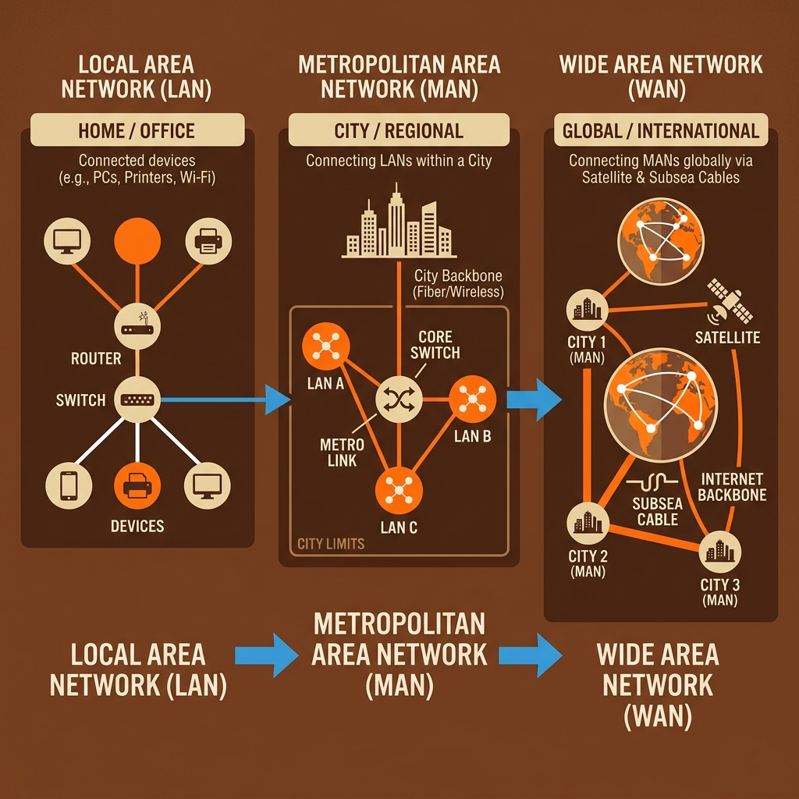
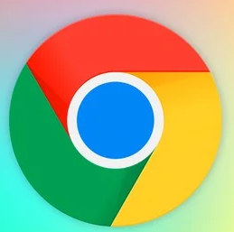
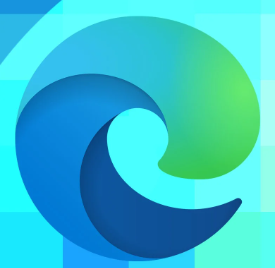
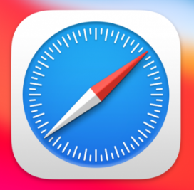
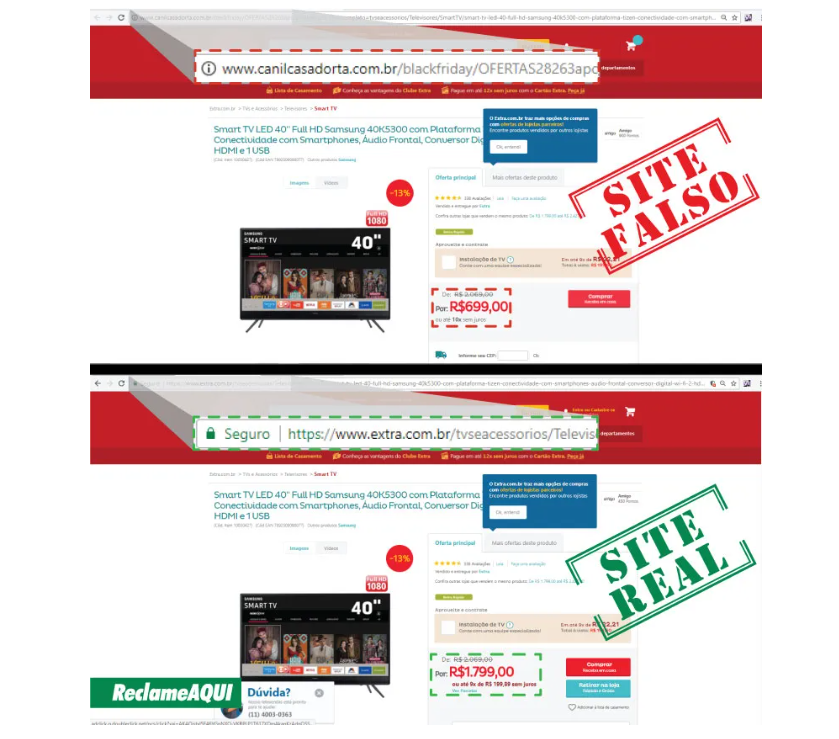

Aula 1: Introdução à Internet e Navegação Segura
1. O que é a Internet?
A Internet é uma rede mundial de computadores que conecta bilhões de dispositivos em todo o planeta, permitindo a troca instantânea de informações, comunicação entre pessoas, acesso a serviços online e compartilhamento de conteúdos diversos como vídeos, documentos e mensagens.

Breve Histórico da Internet
A Internet nasceu na década de 1960 como um projeto militar norte-americano chamado ARPANET, desenvolvido para garantir comunicação segura entre bases militares e universidades mesmo em caso de ataques. Nos anos 1970 e 1980, expandiu-se para o ambiente acadêmico, conectando universidades e centros de pesquisa.

A grande revolução aconteceu em 1989, quando o cientista Tim Berners-Lee criou a World Wide Web (WWW), um sistema que permitia navegar entre documentos usando links clicáveis. Nos anos 1990, a Internet se popularizou mundialmente, chegando às casas e empresas. Hoje, é parte essencial da vida moderna, presente em smartphones, computadores, TVs e até eletrodomésticos.
2. Tipos de Redes
As redes de computadores são classificadas pela área geográfica que cobrem:

- LAN (Local Area Network - Rede Local): Conecta dispositivos em espaços pequenos como residências, escritórios ou escolas. Exemplo: a rede Wi-Fi da sua casa.
- MAN (Metropolitan Area Network - Rede Metropolitana): Abrange uma cidade ou região metropolitana, conectando diferentes bairros e instituições. Exemplo: rede de internet que conecta escolas públicas de uma cidade.
- WAN (Wide Area Network - Rede de Longa Distância): Conecta dispositivos em grandes áreas geográficas, como estados, países ou continentes. Exemplo: a rede de agências bancárias de um banco nacional.
- Internet (Rede Global): A maior rede de todas, conectando computadores e dispositivos no mundo inteiro, formando uma "rede de redes".
3. Navegadores de Internet (Web Browsers)
Os navegadores (ou browsers) são programas que permitem acessar e visualizar páginas da web. Conheça os principais navegadores modernos:

Google ChromeMais popular do mundo, rápido e integrado ao Google.
 Mozilla Firefox
Mozilla Firefox
Código aberto, foco em privacidade e personalização.

Microsoft EdgeNativo do Windows, rápido e baseado no Chromium.

SafariDesenvolvido pela Apple para Mac e iPhone.
VPN integrada e bloqueador de anúncios nativo.
 Brave
Brave
Foco extremo em privacidade e bloqueio automático.
Vídeo Complementar Recomendado pelo Prof. Marcos Rangel
Evolução Histórica dos Navegadores de 1992 até 2025Assista a esta incrível animação comparativa mostrando o surgimento e a disputa de popularidade dos maiores navegadores da história da internet:
▶️ Assistir no YouTube: Navegadores 1992 - 2025 ↗4. Golpes Comuns na Internet e Como se Proteger
A Internet oferece inúmeras oportunidades, mas exige atenção contra criminosos virtuais. Conheça os golpes mais comuns:
4.1. Phishing (Pescaria de Dados)
O que é: Mensagens ou sites falsos que se passam por bancos ou lojas conhecidas para roubar senhas e dados do usuário.

Proteção: Verifique o endereço URL. Nunca clique em links suspeitos.
4.2. Golpe do Boleto Falso
O que é: Boletos bancários adulterados enviados por e-mail ou WhatsApp com o código de barras modificado para a conta de criminosos.

Proteção: Sempre confirme o nome do beneficiário no aplicativo do seu banco antes de pagar.
4.3. Golpe da Loja Online Falsa
Sites fraudulentos com preços incrivelmente baixos que recebem o pagamento via PIX/Boleto e nunca entregam o produto.
4.4. Engenharia Social
Manipulação psicológica em que o criminoso se passa por familiar ou autoridade para obter códigos e dinheiro.
4.5. Falso Suporte Técnico
Golpistas alegam que seu computador tem vírus e solicitam acesso remoto para roubar senhas e informações.
4.6. Golpe do PIX (WhatsApp)
Perfis clonados ou invadidos solicitando transferências urgentes via PIX se passando por amigos ou familiares.
5. Como Navegar com Segurança
Adote estas 8 práticas essenciais de segurança digital no seu dia a dia:
- Mantenha tudo atualizado: Navegador, sistema operacional e antivírus na versão mais recente para corrigir falhas.
- Verifique o cadeado 🔒 HTTPS: Garanta que a URL comece com
https://antes de digitar dados pessoais. - Use senhas fortes e únicas: Mínimo de 12 caracteres combinando letras maiúsculas, números e símbolos.
- Ative a Autenticação em Duas Etapas (2FA): Exija um segundo código de validação no login do seu e-mail e redes sociais.
🔐 Como funciona a Autenticação em Duas Etapas (2FA)?
A 2FA adiciona uma camada extra de proteção além da sua senha. Mesmo que alguém descubra sua senha, não conseguirá entrar na sua conta sem o segundo código.
- Passo 1: Você digita seu e-mail e senha normalmente.
- Passo 2: O sistema envia um código temporário de 6 dígitos para o seu celular (por SMS, WhatsApp ou aplicativo autenticador como o Google Authenticator).
- Passo 3: Você digita esse código na tela de login para confirmar que é realmente você.
💡 Dica do Prof. Rangel: Ative o 2FA nas suas contas mais importantes: Gmail, redes sociais e aplicativos de banco. É como ter uma segunda fechadura na porta da sua casa digital!
- Cuidado com cliques impulsivos: Desconfie de ofertas "boas demais para ser verdade" e mensagens alarmistas.
- Proteja suas informações pessoais: Nunca envie fotos de documentos ou senhas por mensagens não criptografadas.
- Cuidado com Wi-Fi público: Evite acessar bancos ou fazer compras online conectado a redes Wi-Fi desconhecidas.
- Faça backups regulares: Guarde cópias dos seus arquivos importantes na nuvem (Google Drive, OneDrive).
6. Dicas Anti-Cliques Compulsivos
Para evitar cair em armadilhas e golpes na internet, pratique estas orientações atitudinais:
- 🛑 Pause antes de clicar: Pergunte-se: "Eu realmente solicitei este e-mail ou preciso deste link?"
- 🔍 Leia o conteúdo completo: Títulos chamativos e alarmistas são táticas comuns para induzir ao erro.
- ⏰ Espere alguns segundos: A urgência artificial ("Sua conta será cancelada em 10 minutos!") é a principal arma de golpistas.
- 🚫 Use bloqueadores de anúncios: Reduza pop-ups e propagandas enganosas.
- 📱 Desabilite notificações desnecessárias: Mantenha o foco e evite impulsos.
📝 Avaliação Didática — Aula 1 (5 Questões)
Responda às 5 questões abaixo e digite seu nome completo para assinar o comprovante de conclusão da Aula 1.